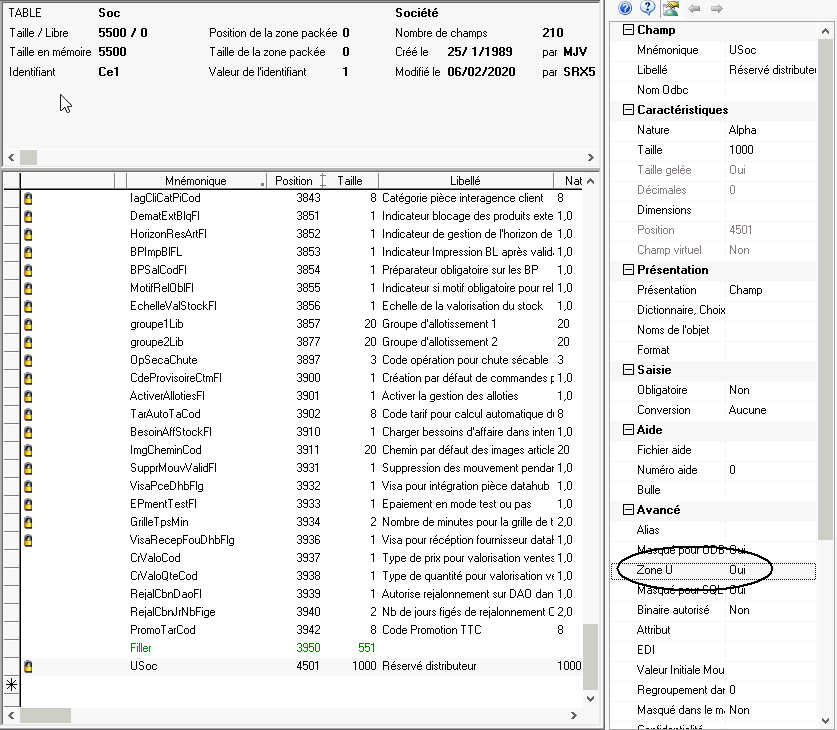
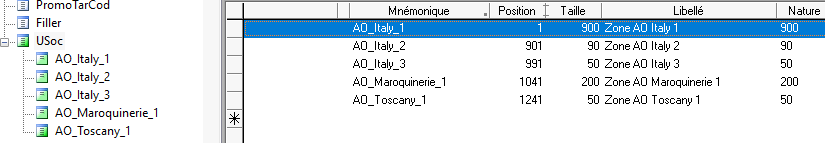

Pour qu'une donnée soit extensible (c'est à dire que ses sous-données puissent dépasser la taille initialement prévue), il faut cocher la case <Zone U>

Lorsque Xwin est lancé en mode Surcharges Multiples, (c'est à dire qu'il détecte la présence d'un fichier overwrite.txt), quelques nouvelles fonctionnalités apparaissent dans l'éditeur de dictionnaires :
par
défaut, Xwin affiche le dictionnaire de base ET toutes les surcharges
qui sont en lignes.
Ici, vous voyez les données provenant de
- l'add-on Italy
- l'add-on Maroquinerie
- la surcharge Tuscany

le choix <Outils><Ne voir que le dictionnaire principal> permet de ne voir que le dictionnaire de base sans aucune surcharge
le choix <Outils><Ne voir que le dictionnaire principal et son premier niveau de surcharge> permet de voir le dictionnaire de base et la première surcharge trouvée d'après les implicites et non d'après overwrite.txt. Il s'agit du mode de fonctionnement habituel, comme si le fichier overwrite.txt n'existait pas.